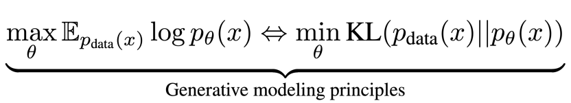

Motivation
We assume that large language models derive their intelligence not from the autoregressive mechanism itself, but from the fundamental principle of generative modeling—approximating the true language distribution via maximum likelihood estimation or KL divergence minimization.
The training objective of masked diffusion models on text has been shown to serve as an upper bound on the negative log-likelihood of the model distribution [1, 2], which is equivalent to maximum likelihood estimation and minimization of the KL divergence.
Method
LLaDA is a masked diffusion model [1, 2] that employs the following methods for pre-training , supervised fine-tuning (SFT), and sampling.
Scalability
LLaDA demonstrates impressive scalability, with its overall trend being highly competitive with that of autoregressive baseline.